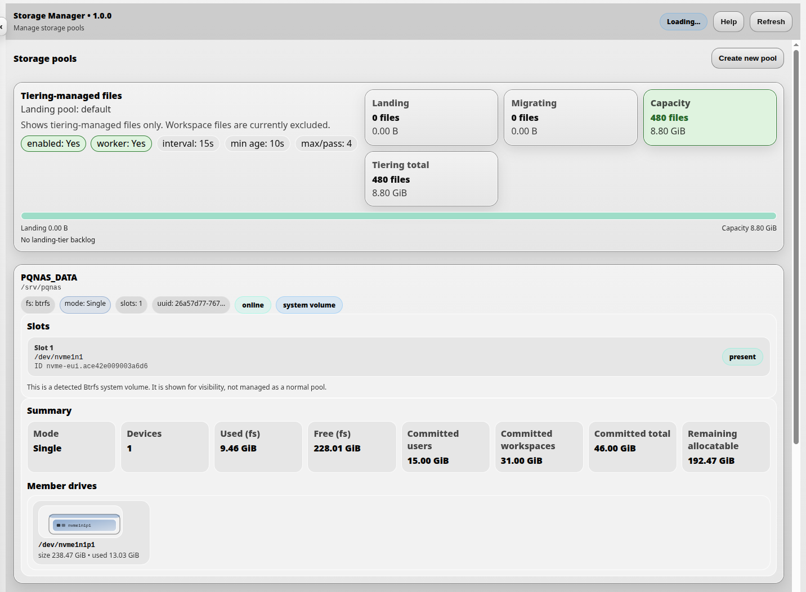
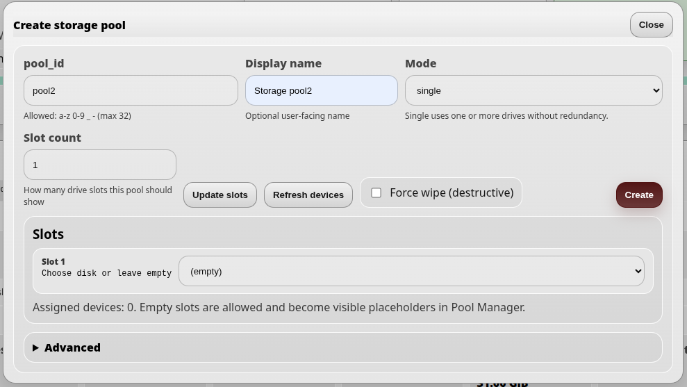
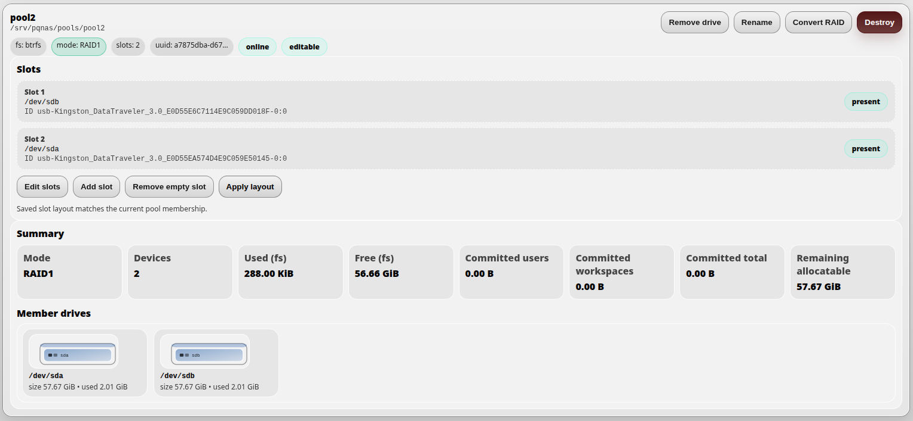
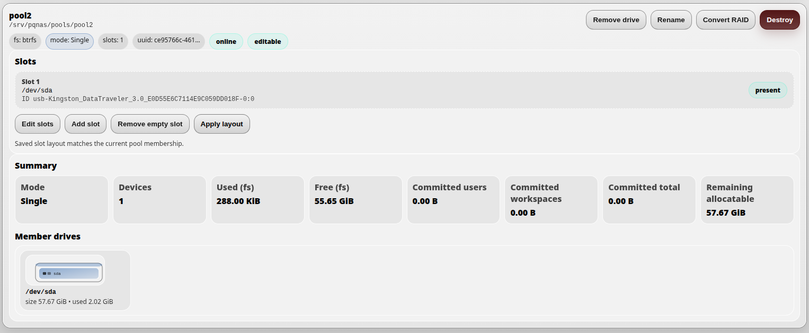
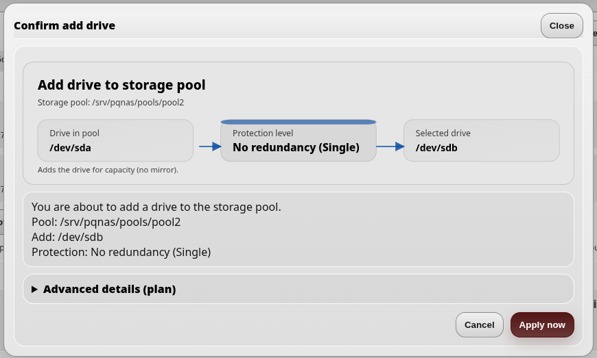
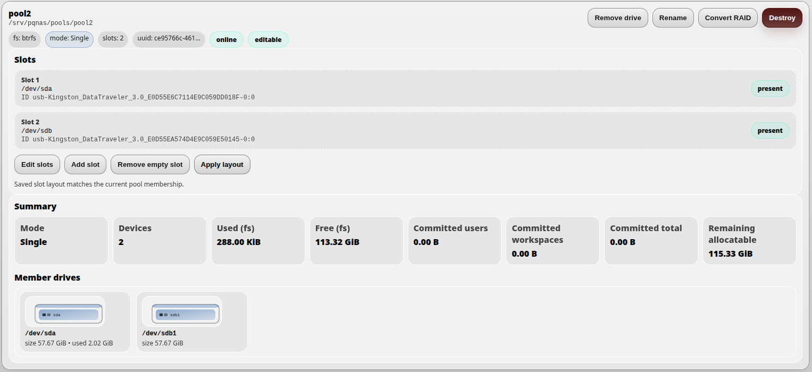
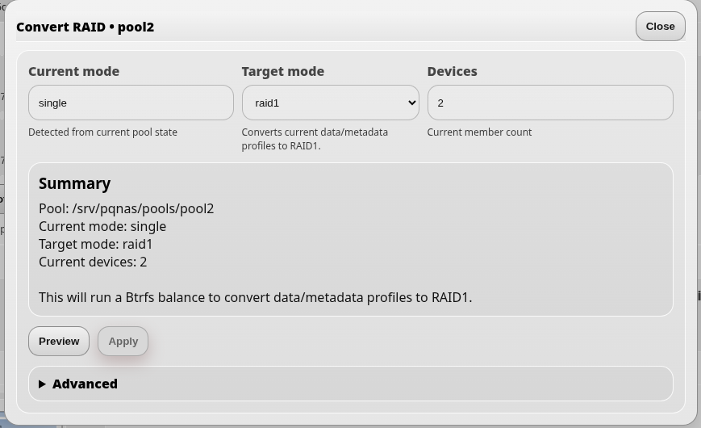
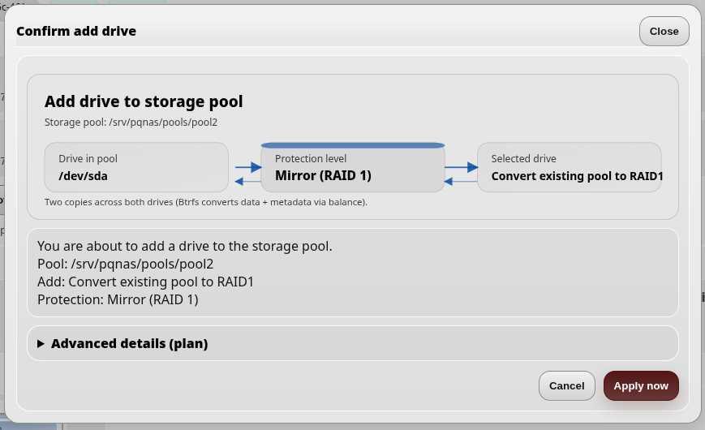
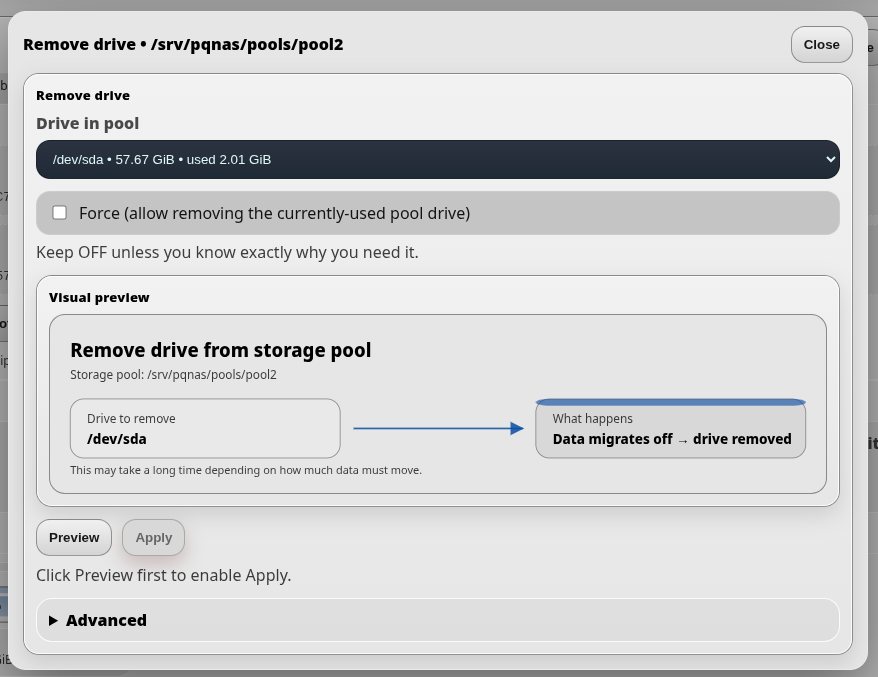
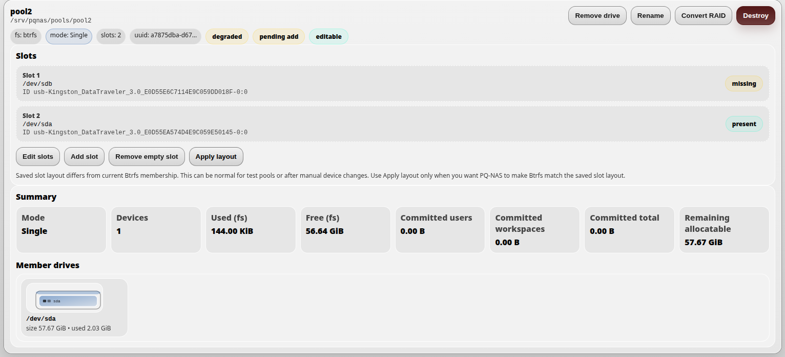

Storage Manager
Storage Manager is used to manage DNA-Nexus storage space, disks and storage pools.
From Storage Manager, an administrator can see which disks belong to which pool, create new pools, expand existing pools and monitor storage activity. The same page also shows upload tiering activity, so administrators can see files moving from a temporary landing pool into their final storage location.

What Storage Manager is for
In Windows terms, storage pools are roughly comparable to having different storage drives such as C: or D:. In DNA-Nexus, pools are Linux storage locations backed by one or more disks or devices.
A pool can be used as a general home pool, a RAID-backed pool, a fast landing pool for uploads, or a storage area for specific users or workloads.
Upload tiering status
At the top of Storage Manager, the administrator can see files managed by upload tiering. Upload tiering is configured in Administrator settings → Upload tiering.
Upload tiering can use a temporary landing pool. This landing pool can be a fast device, such as an SSD, where uploaded files are first written. After that, DNA-Nexus moves the files to their final storage location according to the configured tiering rules.
Landing pool
The Landing value shows how many files are currently waiting in the landing pool. By default, files are moved from the landing pool to final storage after a short delay.
In the default configuration, the delay is 15 seconds. The migration activity is visible in real time on the Storage Manager page.
Migrating files
The Migrating value shows how many files are currently being migrated from the landing pool to final storage.
The Max/pass value controls how many files may be migrated during one migration pass. For example, a value of 4 means that up to four files can be processed in one pass.
Storage pools
Storage pools define where DNA-Nexus stores data. A pool may be backed by a single disk, a RAID setup or another supported storage layout.
In Storage Manager, the administrator can inspect pools, see their member devices, check available capacity and manage pool structure. Depending on the pool and device state, actions may include adding devices, removing empty slots, converting the structure or taking the pool into use.
Creating a new storage pool
To create a new storage pool, open Storage Manager and click Create new pool at the top of the page.

In the dialog, enter the basic pool details:
- pool_id is the internal identifier used by the server.
- Display name is the user-facing name shown in the interface.
- Mode selects the pool layout, such as single or raid1.
- Slot count controls how many drive slots are shown for the pool.
If the administrator wants to assign drives immediately, set the slot count first and click Update slots. For example, setting the slot count to 2 creates two drive selectors. The administrator can then select automatically detected devices for those slots.
If the selected mode is raid1, at least two drive slots must be configured. RAID1 needs two or more devices so the data can be mirrored.
After the pool details and optional devices have been selected, click Create. Storage Manager creates a plan and applies the requested pool creation operation.
After creating a storage pool
After a storage pool has been created, it appears as its own pool card in Storage Manager. User-created pools are shown separately from the system volume.

The pool header shows the pool name, mount path, filesystem type, RAID mode,
slot count, UUID, online state and whether the pool is editable. In this example,
the pool is mounted under /srv/pqnas/pools/pool2, uses Btrfs and is
running in RAID1 mode.
Slots and member devices
The Slots section lists the configured drive slots for the pool.
Each slot shows the device currently assigned to that slot. The device path, such
as /dev/sda or /dev/sdb, is shown together with a more
stable device identity line when available.
Slot information helps the administrator understand which physical or detected devices belong to the pool. The present badge means that the expected device is currently detected by the server.
The Member drives section shows the live Btrfs member devices detected for the pool. This is useful for comparing the saved slot layout with the actual current pool membership.
Pool summary
The Summary section shows the current storage state of the pool:
- Mode shows the detected pool layout, such as Single or RAID1.
- Devices shows how many devices are members of the pool.
- Used (fs) shows actual filesystem usage.
- Free (fs) shows free filesystem space.
- Committed users shows quota capacity reserved for users on this pool.
- Committed workspaces shows quota capacity reserved for shared workspaces on this pool.
- Committed total is the combined user and workspace reservation.
- Remaining allocatable shows how much capacity can still be assigned as quota reservations.
In RAID1 mode, usable capacity is normally closer to the size of one member device rather than the sum of all devices, because data is mirrored for redundancy.
Pool actions
Editable pools may show actions such as Remove drive, Rename, Convert RAID and Destroy. These actions modify the storage pool and should be used carefully.
Converting a single-device pool into a two-device RAID1 pool
To convert a single-device pool into a two-device RAID1 pool, first click Edit slots on the pool card.

In the dialog, change the slot count from 1 to 2 and click Update slots. In the new second slot, select the drive that will be added to the pool and then click Save layout.
After saving the new layout, the pool card may show yellow warnings such as missing and pending add. These warnings indicate that the saved slot layout now expects a second drive, but the live pool has not yet been updated to use it.
To add the drive to the live pool, click Apply layout.

The dialog shows the planned structure and explains that you are adding a drive to the storage pool. Continue by selecting Activate now.

After the second drive has been added, the warnings disappear and the pool shows the new two-device structure and updated free space information. At this stage, the pool has two devices, but it is still operating in Single mode without RAID mirroring.
If the pool should be converted to RAID1, click Convert RAID.

The conversion dialog shows the current mode, the target mode RAID1, the number of devices and a short summary of the operation. Click Preview first and then Apply.

A final confirmation dialog is shown. Continue by selecting Activate now.
The result is a pool with two mirrored devices. In RAID1 mode, usable data capacity is approximately 50% of the combined raw device size, because the same data is stored on both drives.
Removing a drive from a storage pool
To remove a drive from a storage pool, use the Remove drive action on the pool card.

In the dialog, select the drive that should be removed from the pool. The Force option should normally be left disabled. Enable it only if you fully understand why the currently used pool drive must be removed.
Click Preview first. This creates a removal plan and enables the Apply button. After reviewing the operation, click Apply to start removing the drive from the pool.
During drive removal, DNA-Nexus and Btrfs migrate data away from the selected drive to the remaining member devices. This can take time, especially if the pool contains a large amount of data.
What happens when a drive is removed
- RAID1 pool: data is migrated away from the removed drive and kept on the remaining device or devices. If the pool had only two devices, removing one of them leaves the pool with less or no redundancy, because only one device remains.
- Single pool or capacity-expanding pool: data is migrated off the selected drive to the remaining member devices. This reduces the usable capacity of the pool. The removal can succeed only if the remaining devices have enough free space for the migrated data.
If there is not enough free space on the remaining devices, the drive removal may fail. In that situation, the administrator may need to free space first or add another device before trying again.
After removing a drive
After a drive has been removed from a pool, the pool card may show warnings such as degraded, pending add or missing.

This can happen when the saved slot layout still contains two slots, but the live Btrfs pool now has only one member device. One saved slot is marked as missing, while the remaining device is still present.
If the administrator plans to add a replacement drive, this warning can be useful: it shows that the pool still expects another device. If no replacement drive will be added and the pool should continue with fewer devices, the saved slot layout should be updated.
To clear the warnings without adding a new drive, click Edit slots, reduce the slot count to match the current number of member devices, click Update slots, make sure the remaining slot points to the current member device, and then click Save layout.
System volume and quota reservations
Storage Manager may show a pool marked as System volume. This
is a Btrfs volume detected by DNA-Nexus and shown for visibility.
In a typical installation, this volume is mounted under /srv/pqnas.
The system volume is used by DNA-Nexus for server-managed runtime storage. Depending on the installation, this may include configuration, application data, user data roots, shared workspaces, installed app data and other DNA-Nexus managed directories.
For production use, administrators may prefer to keep the system volume separate from large customer or user storage pools. In that model, the system volume remains a smaller server/runtime area, while larger HDD, SSD, SAS or SATA pools are created separately and assigned to users or workloads.
Actual usage vs reserved quota
The pool summary separates actual filesystem usage from quota reservations. Used (fs) shows how much space is currently used on the filesystem. Free (fs) shows free filesystem space.
Users reserved shows the total quota reserved for user accounts. Workspaces reserved shows the total quota reserved for shared workspaces. When a new shared workspace is created, DNA-Nexus currently creates an automatic workspace quota reservation. The default shared workspace reservation is 10 GiB.
Reserved total is the sum of user quota reservations and workspace quota reservations. Still allocatable shows how much capacity can still be assigned as new quota reservations.
Reserved quota is not the same as actual disk usage. For example, a shared workspace may contain only a few hundred MiB of files, but still reserve 10 GiB from the pool. This reservation defines how much the workspace is allowed to grow.
Snapshot coverage
If a new Btrfs pool should be protected by snapshots, it must also be added to the snapshot configuration before it appears in Snapshot Manager.